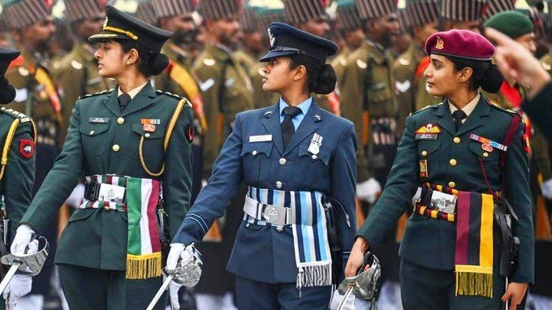
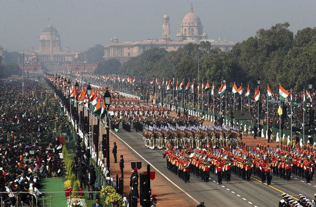
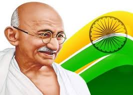
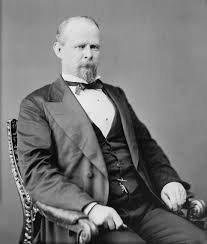

Republic Day is celebrated every year on 26th January to honor the day when the Constitution of India came into effect in 1950, replacing the Government of India Act (1935). This historic event marked the borth of India as a sovereign, democratic, and republic nation.
The day is celebrated with great enthusiasm across the country, symbolizing India's unity, diversity, and commitment to justice, liberty, equality, and fraternity. The Republic Day Parade, held at Kartavya Path in New Delhi, is the highlight of the celebrations, showcasing India's military might, cultural heritage, and progress.
It is a day of pride and patriotism, reminding citizens of their rights and responsibilities as outlined in the Constitution.
Republic Day parade


The Republic Day Parade at Katavya Path Showcases India's Cultural and military pride.
Here sre some famous quotes about patriotism and the Constitution of India:
Patriotism Quotes:
1. "Ask not what your country can do for you - ask what you can do for your country." - John F. Kennedy
2. "A nation's culture resides in the soul of its people." - Mahatma Gandhi 
3. "Patriotism is not short, frenzied outbursts of emotion, but the tranquil and steady dedication of a lifetime." - Adlai Steveson 
4. "We are Indians, firstly and lastly". - B.R.Ambedkar
5. "Freedom is not given;it is taken." - Subhas Chandra Bose
Quotes About the ConstitutionofIndia
1. "The Constitution is not a mere lawyer's document, it is a vechile of life, and its spirit is always the spirit of the age." - B.R.Ambedkar
2. The sancity of law can only be maintained so long as it is the expression of the will of the people. - Bhagat Singh
3. "The Constitution is the guide which I never will abandon." - George Washington